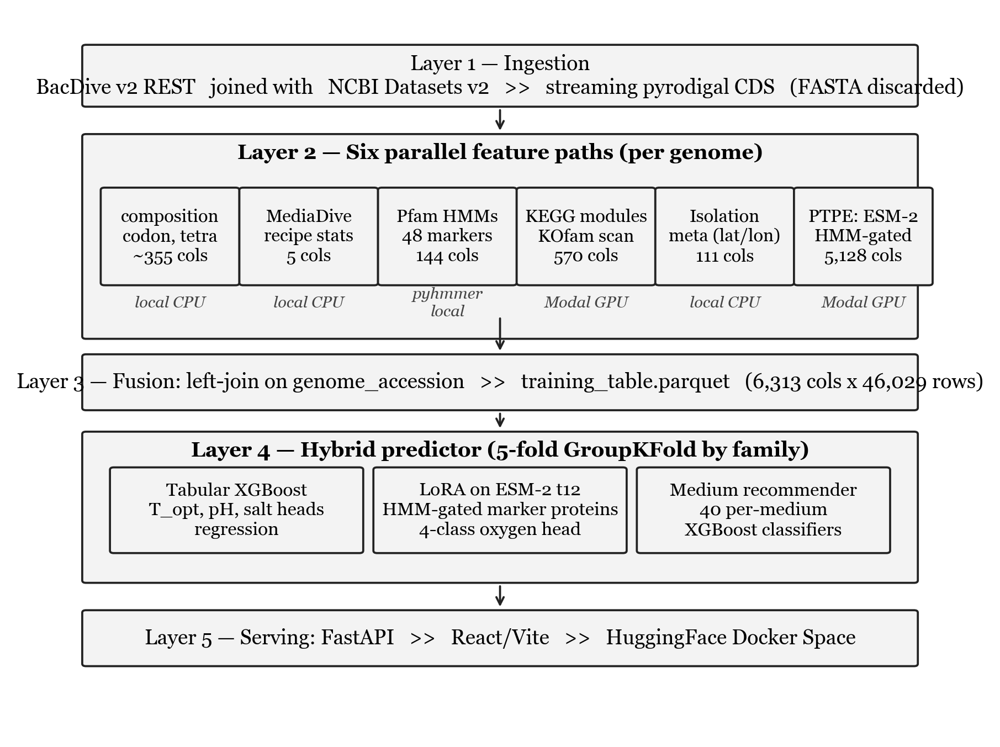
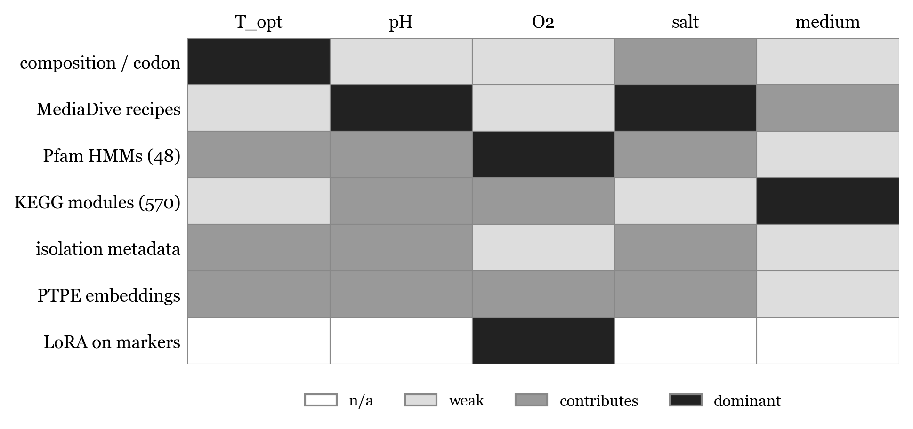
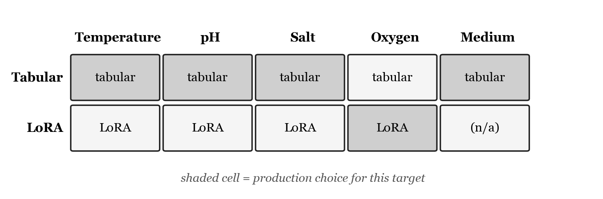

| Miyu Horiuchi miyuh@alumni.upenn.edu |
This document accompanies the manuscript. It visualises the production system and explains the choices behind each architectural decision: what was chosen, what alternatives existed, and what tradeoff each option represents. It is intended for readers who want to reproduce or extend the work and need to understand why each layer is the way it is.
Keywords
The production system is a five layer pipeline. Each layer reads parquet artifacts produced by the previous layer, so any stage can be re-run independently. Six independent feature paths are computed in Layer 2 and joined into a single wide table in Layer 3.

Figure 1. The end to end pipeline from raw BacDive labels to a deployed prediction. Layer numbers correspond to scripts in the repository: Layer 1 is scripts/01_* through scripts/02_*; Layer 2 is scripts/08-31; Layer 3 is scripts/31_merge_features.py; Layer 4 is scripts/03_train_baseline.py, scripts/10_train_media_recommender.py, scripts/modal_train_lora.py, and scripts/39_predict_hybrid.py; Layer 5 is api/main.py and web/.
What we chose. BacDive v2 REST API as the primary label source. 46,029 strains with at least one of the four cultivation targets non null, joined to NCBI Datasets v2 genome accessions.
Alternatives considered.
Tradeoff. BacDive has the largest curated cultivation phenotype set in the public literature but is survivorship biased: only organisms that have already been cultured at least once make it in. The model is therefore appropriate as a first cultivation attempt recommender, not as a guarantee that lineages with no close cultured relatives will be recoverable. This limitation is stated explicitly in the manuscript and is the reason wet lab validation is on the future work list.
What we chose. Each worker process downloads a genome FASTA from NCBI Datasets, runs pyrodigal for CDS prediction, extracts all six feature paths, and discards the FASTA. The pipeline is resumable via JSONL append logs.
Alternatives considered.
Tradeoff. Persisting 22,300 FASTAs would consume roughly 200 GB and force a different deployment story. The streaming approach trades reproducibility of the exact bytes (NCBI is mutable for some accessions over time) for fitting in a normal developer machine. The append only JSONL log preserves the exact features extracted, which is the artifact that matters for re-training.
What we chose. Composition / codon / tetranucleotide, MediaDive recipe metadata, curated Pfam HMM markers, KEGG module completeness, isolation metadata, and phenotype targeted ESM-2 embeddings (PTPE). 6,313 features total per genome. The paths are computed independently and joined by genome_accession.
Alternatives considered.
Tradeoff. Independent paths let XGBoost decide per target which path matters. The feature target importance matrix below shows that this matters: oxygen is dominated by Pfam HMMs and the LoRA head, medium is dominated by KEGG module completeness, and temperature is dominated by composition / codon statistics. A single end to end model could in principle learn this routing, but it would require orders of magnitude more compute and would lose the interpretability that lets us debug per target failures.

Figure 2. Which feature path matters for which target. Shading from white (n/a) through grey (weak / contributes) to black (dominant). LoRA on marker proteins is a target specific override only used for oxygen in the production hybrid.
What we chose. Run pyhmmer against eight phenotype relevant HMM marker families, embed only the matched proteins with ESM-2 t30, and mean pool within each category.
Alternatives considered.
Tradeoff. Whole proteome pooling drowns the few phenotype relevant proteins (roughly 12 cytochromes for oxygen, for example) under the roughly 4,000 housekeeping proteins, producing a feature vector that is biologically dilute. HMM gating concentrates the signal but means we are blind to phenotype contributions from proteins we did not include in the 48 marker panel. The manuscript explicitly lists this as a limitation: targets that depend on protein families outside the 48 marker panel are likely undermodeled. Attention pooled per category is the most natural follow up and is on the future work list.
What we chose. Frozen ESM-2 t30 for PTPE features. Separately, LoRA fine tune ESM-2 t12 on HMM gated marker sequences and use the LoRA oxygen head in production.
Alternatives considered.
Tradeoff. ESM-2 t30 was the largest model that could be run on Modal A10G GPUs within a reasonable budget for 22,300 genomes. LoRA fine tuning at t12 is the smallest variant that solves the oxygen classification task; the manuscript reports macro F1 of 0.945 on fold 0, which is the strongest result in the system. Going to a larger PLM or to a DNA foundation model would likely add more lift but would require an order of magnitude more compute and is reserved for the follow up paper. Full fine tune of ESM-2 was rejected because LoRA adapters give the bulk of the benefit at less than 10% of the trainable parameter count.
What we chose. A per target model selection stack: tabular XGBoost for temperature, pH, and salt, LoRA fine tuned ESM-2 t12 for the four class oxygen target, and the tabular MediaDive recommender for medium ranking.
Alternatives considered.
Tradeoff. Fold 0 LoRA is dramatically better at oxygen (macro F1 0.945 vs 0.402 for tabular) but worse for the continuous targets: temperature MAE 3.67 vs 2.67 °C, pH MAE 0.56 vs 0.47. A single all task model would be forced to choose between these failure modes. The hybrid lets each target use its strongest validated head and is fully reproducible from scripts/39_predict_hybrid.py. Every served row carries an O2_source flag indicating whether the prediction came from LoRA or the tabular fallback.

Figure 3. Production model selection matrix. Shaded cells indicate the production choice for each target. Tabular wins three of four cultivation targets and medium ranking; LoRA wins oxygen.
What we chose. XGBoost with 5 fold GroupKFold by family. Hyperparameters: max_depth=5, learning_rate=0.05, n_estimators=500 for regression and 300 for classification, with early_stopping_rounds=50.
Alternatives considered.
Tradeoff. XGBoost is the strongest single shot tabular learner on this kind of mixed numeric / sparse / interaction heavy feature matrix, handles missing values natively (essential because pH and salt labels are sparse), and trains on CPU in minutes rather than hours. LightGBM would be roughly equivalent but has less mature handling of label sparsity per target. The Koblitz 2025 reference baseline is also a tree ensemble, which keeps the comparison apples to apples.
What we chose. 5 fold GroupKFold on the BacDive family field with genus then species fallback for the 4.5% of strains without a family assignment.
Alternatives considered.
Tradeoff. Family grouped CV controls for trivial leakage because no family appears in both train and test, but does not address the more demanding out of clade generalization. The manuscript states this explicitly as a limitation and lists leave one phylum out as the next experiment, with the caveat that 5 of 30 phyla have fewer than 50 BacDive strains and would not be statistically meaningful as held out sets.
What we chose. Modal A10G GPUs for the heavy stages (KOfam scan, ESM-2 embedding, LoRA training). Local Mac for everything else.
Alternatives considered.
Tradeoff. Modal A10G hits the right point on the cost / latency / setup tradeoff curve for batch jobs that run for minutes to hours. Cerebrium had the most ergonomic developer experience but was unreliable for our workload at the time. Local Mac would have made the project impossible at this scale (the KOfam scan alone would have taken weeks). The cost of Modal for the published results was on the order of dozens of dollars, not hundreds.
What we chose. FastAPI backend serving the React / Vite frontend, deployed as a Docker container on HuggingFace Spaces.
Alternatives considered.
Tradeoff. HuggingFace Spaces gives free hosting for ML demos, automatic HTTPS, and a discoverable URL inside the academic ML community. FastAPI plus React gave the freedom to build a non trivial UI (catalog table, detail drawer, on demand prediction, NCBI lookup, accuracy panel) that Gradio or Streamlit would have made painful. The Docker setup is documented in Dockerfile and is portable to any container host if HuggingFace ever becomes unsuitable.
Three guiding principles run through the design choices above.
The same parquet boundaries make several future extensions cheap:
genome_accession as the key, then scripts/31_merge_features.py joins it automatically.scripts/modal_per_marker_embed.py and scripts/modal_train_lora.py; the downstream tabular and serving layers are untouched.src/microbe_model/train/baseline.py.These are deliberate consequences of choosing parquet boundaries between layers over a tightly coupled end to end pipeline.